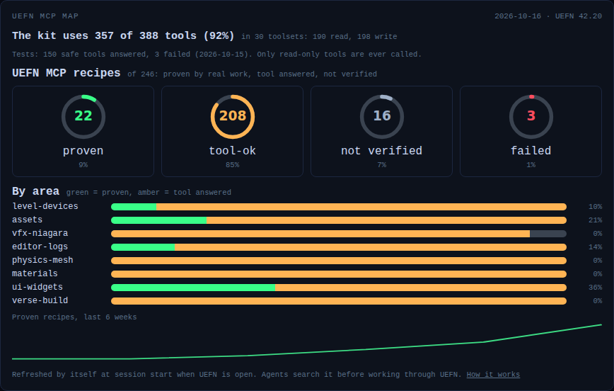

The MCP engine
UEFN's MCP server is how the agents read and change what is inside UEFN: devices in the level, widgets, Verse files, assets, even a running session. It is the engine under almost everything the kit does, and it grows quickly.
Why the kit maps it
Epic adds tools to the MCP faster than it announces them. A tool nobody knows about is a tool nobody uses. On the first full map, made on UEFN 42.40, the server offered 28 toolsets and 388 tools, while the kit's own tool contracts documented 6. That is under 2%.
So the kit does two things: it takes one complete map of the MCP, and from then on it tells you what changed.
What is in it today
These families were seen in the first map. Read-only use is always fine; anything that writes, saves, builds or starts a session asks you first.
| Family | What it can do |
|---|---|
| Devices | Read and set device properties, wiring and events; place devices. |
| Widgets (UMG, Verse fields, view bindings, animations) | Read widget trees and fields, create and edit widget blueprints. |
| Verse | List and write Verse files, build the project. |
| Sessions | Start a session, push changes, read client logs. |
| Scene graph | Entities and their components. |
| Editor | Capture the viewport, read logs, run batches of calls. |
| Assets | Materials, Niagara, physics, data and curve tables, textures, meshes. |
Most of this is not yet used by the kit. Reading widget trees worked on the first test; writing is exposed but still to be tried. Starting a session, reading client logs and capturing the viewport look like the road to automatic playtests and screenshots, but that is a guess from the tool names, not something proven.
The kit maps it by itself
You do nothing. At every session start the kit looks, in a fraction of a second, whether UEFN's MCP is answering. If it is, and the last full map is older than six hours, it maps the whole MCP in the background and tests the safe tools. It costs no AI tokens and never delays the session. If UEFN is closed it stays silent and tries again next time.
The kit saves:
- the map, a readable catalog grouped by toolset, with a read or write guess for each tool, whether it was tested, and a mark on the ones the kit already uses;
- the news: the tools added, removed or changed since the last map, with a line on what each new tool does;
- the history: the previous map, and a line in a change log for every change, with the date and the UEFN version.
This works on its own, whether or not a new kit release is published: it reads your UEFN, not the kit repository.
The MCP belongs to UEFN, not to a project, so there is one map for all your projects. It lives in .claude\skills\mcp-tool-contracts\references\map\ in your user folder. The descriptions in it are Epic's text, so this folder stays on your computer and is never published or copied into a project.
The tests
The kit also tests the MCP, safely. It only calls tools that are read-only (the server says so, or the name starts with get, list, find, describe, query, search, count, is or has) and that need no arguments. Writing tools are never called. Each result is recorded, and a tool that worked last time and fails now is reported as stopped working: that is how you notice an UEFN update that broke something before it breaks your session.
You can see the numbers on the Skills page of the console, in the UEFN MCP section: how many tools have a recipe out of the total, and how many of those are proven (recomputed at every map, so you see it grow as recipes are added), what the tests found, and the latest news.
How the agents use it
The coder, the QA agent and the bootstrap agent are told: before doing something through UEFN, search the map (mcp_map.py --find followed by a few words) and prefer a purpose-built tool to a workaround. They never guess a tool name. When the map finds news at the start of a session, the agent tells you in two lines what is new and what it could do for your maps, and only proposes.
Noticing what changed
The map refreshes itself, so the news arrive the next time you open a session after UEFN was open. /mcp-snapshot does the same right away if you do not want to wait. /kit-doctor adds a note when there is no map yet, or when UEFN has not been open for a month. It is a note, never a problem.
Recipes after a new UEFN
When UEFN changes a tool, the recipes that use it are no longer proven. python Claude/hooks/recipes_status.py --stale lists the recipes whose tool changed or was removed since the last retest, from the saved map history. Replay them with the lab guard, then run --retested to stamp today: from then on only newer changes are listed.
What happens with the news
- The agent tells you what is new and what it could be used for. Nothing changes because of it without your yes.
- When a tool proves useful, it goes into the kit's tool contracts, so every agent uses the same one and the same way.
- Tools the kit relies on are listed in
Claude/reference/mcp-known-tools.json; that is what the "kit uses" count is based on.
Writing tools change your project. Save only the paths you changed: an empty list saves every unsaved asset in the project, including work you did not mean to save. The agents are told this, and it is worth knowing yourself.
If UEFN is closed or the MCP is not reachable, the map is not made and nothing is guessed. An old map is better than an invented one.
The exploration lab
To learn what a tool really does, the kit has a lab module (Claude/hooks/mcp_lab.py). An agent uses it to call any MCP tool; every call is written to Claude/logs/explore-ledger.jsonl, and the safety rules live in the code, not in a request.
- In a real project the lab only writes inside a
KitTestfolder, needs a switch for level and play-session tools, and never deletes. - In a laboratory project (a clean project you can throw away) you set
LAB_AGGRESSIVE=1andLAB_ROOT=/<project name>and create the fileClaude/LAB-PROJECT.txt. The lab starts only if that file exists and the open level is really inside that project. Then it can delete, place devices, run game sessions, edit Verse and run Python. It never quits or restarts the editor and never touches a disk path outside the project.
What an exploration finds is written once, per area, in the kit (mcp-tool-contracts/references/areas/), so nobody repeats the work. The mission to give to the explorer is in mcp-tool-contracts/references/exploration-mission.md.
Long batteries
In a laboratory project the kit can test the whole toolset without anyone writing a test per tool. Claude/hooks/mcp_cover.py reads each tool's input and output schema, notices which tools produce which kind of object (a tool that returns a widget blueprint can make the fixture another tool needs), builds those fixtures, and calls every tool, in several passes. Destructive tools run last, and listing tools are limited to a test folder so they cannot return the whole engine. The result is Claude/docs/mcp/COVERAGE.md: how many tools answered, how many are alive but still need a recipe, and which kinds of object we cannot make yet.
Three more suites repeat things to find what a single call hides: soak repeats create, edit, compile, save and delete many times and warns if the editor gets slower; session runs the game-session loop several times with timings and always stops the session; mapcheck confirms the saved map still matches the server.
Claude/hooks/mcp_queue.py runs them one after the other. Start it in a second terminal and it waits, spending no tokens, until the exploration is finished, then runs the four suites and writes QUEUE-REPORT.md.
How sure is a recipe?
Each recipe in recipes.json has one of three states. Not verified means nobody has called it. Tool answered (tool-ok) means the tool replied once, but that exact call has not been repeated while working. Proven means that exact kind of call (same tool, same argument names, same on/off switches; the text and numbers do not matter) worked while someone was really working. Only calls made during real work count (the hook marks them work). Calls made by exploring in the lab or by the long batteries never count as proof.
You do not have to do anything. Every call your agents make to UEFN during real work is noted by a small hook (Claude/hooks/mcp_work_log.py) in Claude/logs/explore-ledger.jsonl, on your computer only, and the proof builds up by itself. The proof is also kept in your profile (~/.claude/mcp-evidence.json, only the names of the argument fields), so deleting a project from the disk does not lose it. To see where you stand, run python Claude/hooks/recipes_status.py --report: it only reads and prints, it writes nothing. The Skills tab shows the same count in the UEFN MCP tools card: four rings with the percentage of recipes (proven, tool answered, not verified, failed), one bar per area to see where proof is missing, and a small line with the proven recipes of the last weeks.

To share what you proved, open the Skills tab (Contribute to the community is on by default) and press Contribute next to UEFN MCP evidence in To share. In the UEFN MCP tab the box Not in the kit yet lists the recipes your work proved with their state and the same Keep private / Promote all buttons. You see the exact JSON, then finish on GitHub with your own account; nothing is sent by the kit. (From a terminal, recipes_status.py --export out.json makes the same file.) The file holds only a count per recipe (how many times it worked, how many failed, the last short error). It has no arguments, no paths and no project names, so it cannot reveal your islands. The maintainer merges the counts from many people and, with --apply --write, marks the recipes as proven in the next release. The next battery skips recipes that are already proven, and a recipe it replays with its own arguments and that works becomes proven too.
You can also skip the long batteries completely: if enough people share what they proved, the recipes become proven release after release. The batteries only make it faster.
When UEFN closes or crashes
Claude/hooks/uefn_session.py tells what UEFN is doing and, only after a crash, can start it again. It is based on the idea in the open-source uefn-mcp-server project (MIT).
python Claude/hooks/uefn_session.py statusonly looks, never changes anything. It reads the editor log, the running programs and the two ports, and answers one of: not running, starting, hub (the start screen), opening, project open, closing, another project open, open failed, crash dialog.python Claude/hooks/uefn_session.py recoverstarts the project again. It refuses unless all of this is true: no editor is running, the last run ended in a crash, you switched it on (auto-recover: yesinClaude/LAB-PROJECT.txt, orUEFN_AUTO_RECOVER=1; it is off by default), it is the same project, and it has not already tried twice in the last 30 minutes.--wait 180waits until the project is open again (about a minute in practice).- A normal close is not a crash. A killed editor is a crash. The crash window from Epic's reporter next to a healthy editor is not a crash either.
- A running editor is never closed or killed by an agent. If UEFN stops on the start screen, the agent tells you and you open the project. To avoid that, set UEFN to open the last project on start:
python Claude/hooks/uefn_session.py set-load-on-startup LastProject(only while UEFN is closed; it keeps a backup).
Known traps of UEFN 42.20
These are written in the skills too, so the agents avoid them.
- Static mesh readers that crash the editor:
get_lod_count,get_number_verts,get_num_triangles,get_num_sectionsandagg_geom.export_text(). Do not call them. - Dynamic input schema:
GetDynamicInputSchemacrashed the editor once on an input that was not dynamic. Use it only on a verified dynamic input. - UI components:
AddUIComponentaccepts only the classes the project permits; any other class answers "is not permitted in this project". - "Overwrite Existing Object": creating an asset with a name that already exists opens a window that waits for a click and blocks the MCP. Pick a new name, or check first that it does not exist.
- **Tools marked
[experimental]:** ask the owner before using them; the map shows them as "ask the owner first". - Editor in the background: some calls wait until the UEFN window is in front. If a call hangs, say so instead of retrying in a loop.
- Revision Control disconnected:
StartSessionfails with "Validation failed" and the MCP can hang. Reconnect it first. - A call that changes something and times out: it may have worked. The agent reads the editor state before any retry, so it does not create a second device, entity, file or session.
- **
save_assetswith no list of assets** would save every unsaved asset of the project. The kit's guard refuses it; the agent names the assets it changed. - Mesh numbers without the crash: read the asset-registry tag
Triangles,static_materials, the bounding box or the Nanite settings instead of the crashing readers. - More calls that crash the editor: the console command
EDIT COPYwith no world context, and opening an asset editor from Python. - Calls that need a panel: a call such as
SelectAssetscan time out when the panel it needs (the Content Browser) is not open or not ready. Other tools blame the 'Use Less CPU when in Background' setting; in our test the call answered in 1.4 s with another app on top, so check the panel first. - Rotations: pass a rotator by name (roll, pitch, yaw), never by position; the order (roll, pitch, yaw) turns an actor the wrong way.
- UEFN 42.40 asks two new questions that block the editor until you answer: a trust prompt when a project opens and a notice to enable Python Editor Scripting.